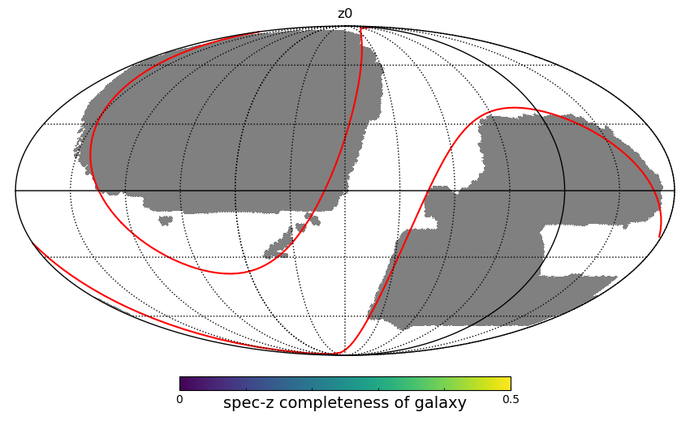

The lsdr9-based catalog (for internal communication)
Overall description
We have reconstructed the source catalog based on DESI Legacy Imaging Surveys (dr9), which has de-extinction magnitude limits of 21 on the r-band or z-band. The full catalog covers ~20000 deg^2. It contains ~120M extragalactic targets (galaxies or QSOs).
Source Catalog
The selection from DESI Legacy Imaging Surveys (dr9)
The primary selection is that:
NOBS_{X} > 0, X = {g, r, z}, the object should be observed in each optical band;
MORPHTYPE != ‘DUP’, use the five morphological types procedured by the fitting of the Tractor; MORPHTYPE == REX, DEV, EXP, SER, or PSF.
apparent magnitude limits are mag_z <= 21 or mag_r <= 21;
unique sources (Sources are resolved as distinct by only counting BASS and MzLS sources if they are both at Declination > 32.375° and north of the Galactic Plane, or, otherwise counting DECam sources.)
For the sources with non-PSF morphologies, all the sources are incorporated. These sources with PSF types are highly likely to be stars. Therefore, we only retained the sources that would be targeted by DESI, meaning those that have the opportunity to be spectroscopically observed by DESI.
The footprint of the sweep catalog (r<21|z<21>)

Main catalog cutout from Source Catalong.
safe1z21z5
appz < 21 tgttype != ‘STAR’ usebits== 0 lmstar_cigale > 6 z > 0
All sources that are resolved (or extended), characterized by MORPHTYPE being either REX, DEV, EXP, or SER, are incorporated into the final catalog. For point sources, identified by MORPHTYPE as PSF, it presents a challenge to differentiate between unresolved galaxies, stars, or distint quasars. Conservatively, the final catalog only includes those PSF sources that possess spectra, which have been classified into GALAXY, QSO, or STAR by Redrock.
Apply the foreground mask. Remove sources around the … …
Objects with PSF morphologies are highly likely to be stars. It is difficult to effectively exclude stars from the sample using only photometric methods, which carries a high risk of introducing contaminants. Therefore, apart from spectroscopically confirmed extragalactic galaxies or quasars, we consider the remaining PSF-type objects to be stars.
Objects with non-PSF morphologies have extended profiles, which are more likely to be galaxies. For those successfully classified with spectral observations, stars are directly removed using the Redrock results of spectral fitting. If there are no spectral observations, we use gaia - r = 0.6 as the boundary to exclude stars.
Catalogs with spectroscopic redshifts
Gravity location: /home/cossim/DESI/yzgu/seedcat/produce/*.fits
lsdr9_prop{zlevel}.produce.fits (~21G)– Main Catalog of galaxy properties
lsdr9_link{zlevel}.produce.fits (~11G)– link to DESI ID and some geometry selections
Note: use zlevel == 5 for the latest data of spectroscopic redshifts
spec-z fraction of galaxy sample in the entire catalog



USAGE
from astropy.table import Table
t1 = Table.read('lsdr9_prop5.fits')
t2 = Table.read('lsdr9_link5.fits')
reject_star = t1['tgttype']!='STAR' # select galaxy, qso; reject star
useflag = t1['usebits']==0 # to avoid the very unreliable redshifts and feroground masks
magr_cut = t1['mag_r']<19.5
isin_desi = t2['isin_desi'] ==1 # apply the region cut
indx_seed =(t2['iseed'] >=0) # sources in the old version of seed catalog
# select sample
t1 = t1[reject_star&useflag&magr_cut&useflag&isin_desi&indx_seed]
# ... make some plots
example plot
The construction of the source catalog
All sources that are resolved (or extended), characterized by MORPHTYPE being either REX, DEV, EXP, or SER, are incorporated into the final catalog. For point sources, identified by MORPHTYPE as PSF, it presents a challenge to differentiate between unresolved galaxies, stars, or distint quasars. Conservatively, the final catalog only includes those PSF sources that possess spectra, which have been classified into GALAXY, QSO, or STAR by Redrock.
In one word, the catalog is constructed by PSF(spec only)+REX+DEV+EXP+SER
When compared to the dataset in Yirong’s work, the following improvements are notable:
We have expanded the catalog from having a magnitude limit of mag_z <= 21 to include objects where either mag_z <= 21 or mag_r <= 21;
we have incorporated the targets with MORPHTYPE == ‘PSF’ into the catalog;
we have introduced a new column, ‘tgttype’, which is used to filter out potential stars;
we have extended the catalog to include areas near the galactic plane where |b| <= 25.
The collections of DESI spectroscopic data
Gravity location: /home/cossim/DESI/yzgu/rawdata/release/DESItgt_specz_{SPECPROD}.fits
Overall view of the collection of DESI spectral data:
SPECPROD |
sci targets ( GALAXY QSO STAR) |
Comments |
|---|---|---|
fuji |
1712004 ( 1125635 90241 496128) |
Early data (released) |
iron |
20415123 (14179871 1645842 4589410) |
Year1 data (dr1) |
iron20240409 |
44276250 (29704052 2757831 11814367) |
Year3 data (daily) |
jura |
- |
Year3 data (latest) |
Selection criteria of the unique targets:
OBJTYPE == ‘TGT’, fiber positioners should point to the sci targets (star, galaxy, or qso).
ZWARN == 0, no redshift warning from REDROCK
maximum DELTACHI2, when one unique target has more than one observation.
tgttype=’star’, ‘galaxy’, ‘qso’
Known issues or to do lists:
*. regionid only has [1,2,3]
*. Random sample and spec-z completeness are need!
*. lsdr9_link, ``ntile'' columns
*. jura version is released internally. Jura consists of SV and the Y3 sample of main survey observations processed using the latest version of the spectroscopic pipeline. There are roughly 46 million unique, good redshifts in this sample, with 31.4M redshifts being extragalactic. Jura includes good spectra and redshifts for 13.0M BGS, 5.8M LRG, 10.7M ELG, 2.2M QSO, and 10.8M stellar main survey targets.
*. add a examples of the SED fitting